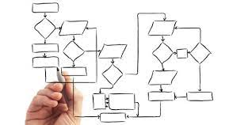

Tanto para ajudar quem está começando como eu, quanto para organizar meus pensamentos como estudante.
Aqui eu irei colocar tanto a parte teórica, quanto a prática sempre que eu conseguir explicar de forma objetiva. Apenas Abra o link que precisar e consuma toda a informação!
Um fluxograma é um diagrama que descreve um processo, sistema ou algoritmo de computador. São amplamente utilizados em várias áreas para documentar, estudar, planejar, melhorar e comunicar processos complexos por meio de diagramas claros e fáceis de entender. Fluxogramas usam retângulos, ovais, diamantes e muitas outras formas para definir os tipos de passos, assim como setas conectoras para definir fluxo e sequência.
Podem ser gráficos simples e desenhados à mão ou diagramas abrangentes desenhados por computador descrevendo as várias etapas e rotas. Se considerarmos todas as diversas formas de fluxogramas, vemos que estão entre os diagramas mais comuns do mundo, utilizados por pessoas técnicas e não técnicas e em variadas áreas de atuação.
Fluxogramas também são conhecidos por nomes mais especializados, como fluxogramas de processo, mapas de processos, fluxogramas funcionais, mapeamento de processos de negócios, notação de modelagem de processos de negócio (BPMN, em inglês) ou diagramas de fluxo de processos (PFD, em inglês). Eles estão relacionados com outros diagramas bastante utilizados, como diagramas de fluxo de dados (DFDS) e diagramas de atividade de linguagem de modelagem unificada (UML, em inglês).
Fluxogramas para documentar processos de negócios passaram a ser utilizados nos anos 1920 e 30. Em 1921, Frank e Lillian Gilbreth, engenheiros industriais apresentaram o “gráfico de fluxo de processos” à Sociedade Americana de Engenheiros Mecânicos (ASME, em inglês). No início dos anos 1930, o engenheiro industrial Allan H. Morgensen utilizou as ferramentas de Gilbreth para dar palestras sobre como deixar o trabalho mais eficiente para pessoas de negócios em sua empresa.
Na década de 1940, dois alunos de Morgensen, Art Spinanger e Ben S. Graham, difundiram os métodos. Spinanger apresentou os métodos de simplificação de trabalho à Procter and Gamble. Graham, diretor da Standard Register Industrial, adaptou gráficos de fluxo de processos ao processamento de informações. Em 1947, a ASME adotou um sistema de símbolos para gráficos de fluxo de processos, inspirado no trabalho do casal Gilbreth.
Também no final dos anos 1940, Herman Goldstine e John Van Neumann usaram fluxogramas para desenvolver programas de computador, e a diagramação foi cada vez mais utilizada em programas de computador e algoritmos de todos os tipos. Fluxogramas ainda são utilizados para a programação, embora o pseudocódigo, uma combinação de palavras e linguagem de codificação destinadas à leitura humana, seja frequentemente usada para descrever níveis mais profundos de detalhe e se aproximar de um produto final.
No Japão, Kaoru Ishikawa (1915-1989), figura importante nas iniciativas de qualidade de produção, considerou fluxogramas como uma das principais ferramentas de controle de qualidade, junto com ferramentas complementares, como o Histograma, folha de verificação e diagrama de causa e efeito, muitas vezes chamado de diagrama de Ishikawa.
| Nome do símbolo | Forma usada | Significado |
|---|---|---|
| Terminação | Elipse | Indica o início ou o fim de um fluxo no diagrama de processos |
| Processo | Retângulo | Indica um determinado processo e suas funções e atividades. |
| Decisão | Losângo | Mostra que uma decisão terá que ser tomada e que o fluxo do processo seguirá determinada direção em função dessa decisão. |
| Dados | Paralelogramo | Representa qualquer tido de dado no fluxograma. |
| Preparação | Hexágono | Mostra que algo deve ser feito, ajustado ou modificado no processo antes de prosseguir. |
| Conector | Círculo | Indica que haverá uma inspeção neste ponto. |